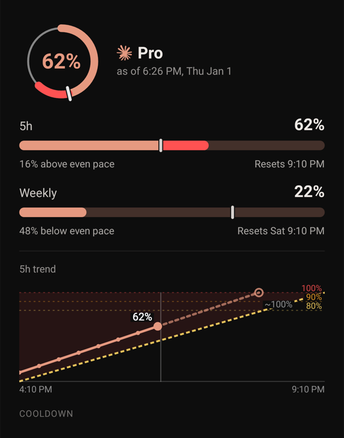
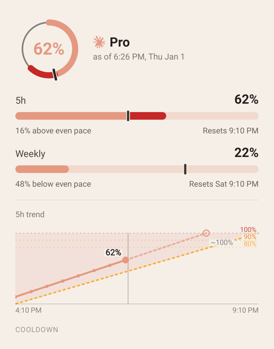
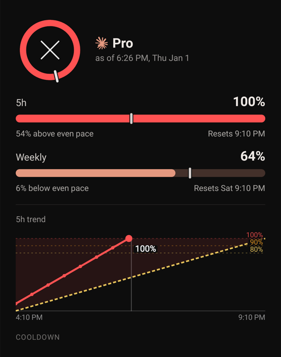
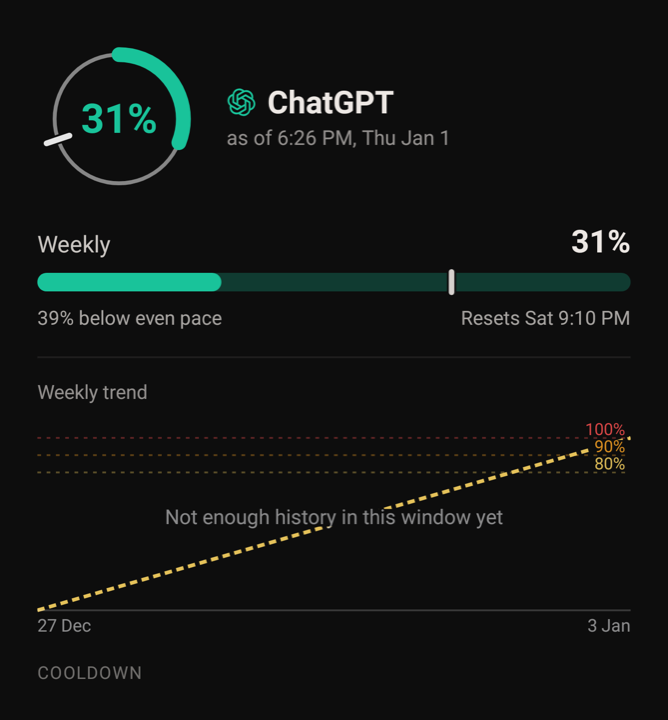
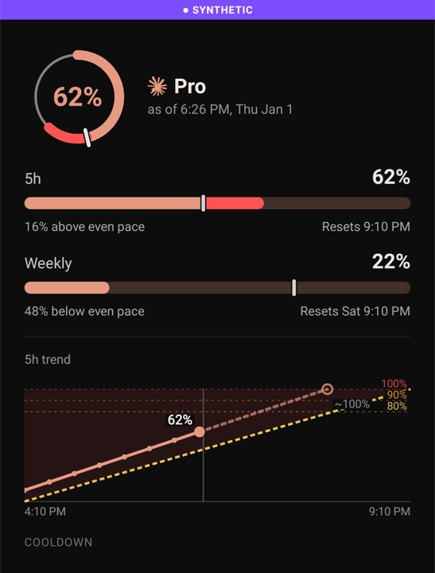

CCRM-24 (Share Card) — the real renders
Drawn by the app's own ShareCard.render at 4× (1440 px wide), shown scaled down. Fixture time 6:29 PM Thu; the card is the account open on Main when Share is tapped. Everything here matches wireframe rev D §9e except the trend, which is the one open question below.
Question — the trend block. Rev D §9e drew a plain 64 dp area sparkline. The build uses the full chart instead — 80/90/100% guides with labels, the even-pace diagonal, the axis times, one dot per reading, the now line, and the dashed projection with its "~100%" — at 120 dp, because your standing rule is that an existing element is never drawn simplified, and 120 dp is the app's floor for a labelled chart. The card grows by about 50 dp.
Fable judged this a fidelity call (keep the full chart); Astra judged it a visible change to the approved card that you should see. That disagreement is why it is here.
A — keep the full chart as rendered below (built, tests green). B — go back to rev D's plain sparkline, 64 dp, no guides or labels.
Answered 2026-09-25: A, the full chart — Robin.
Above pace, dark and light


States



Calls already settled (Fable, checked by Astra)
- Share works in synthetic mode and the card is always marked; the ribbon follows where the drawn numbers came from, not a mode read at another moment.
- The ⋮ now shows whenever the open account has a reading; "Main screen layout" still needs two or more cards; "Share snapshot" is always enabled inside it.
- The PNG is square and full-bleed (chat apps turn transparent corners black); the preview dialog rounds it.
- What is shared is exactly the bitmap in the preview; nothing is written until Share is tapped, and only to the app's cache.